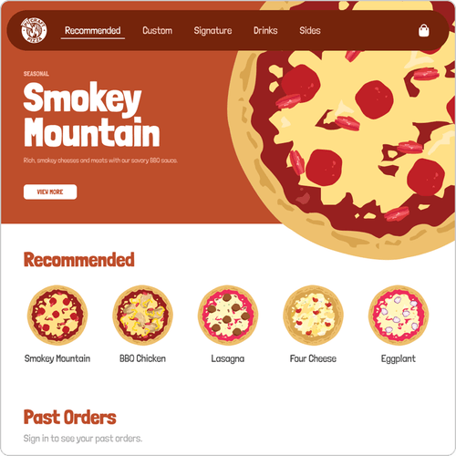
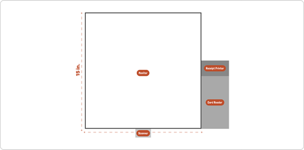
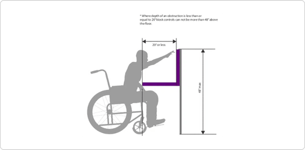
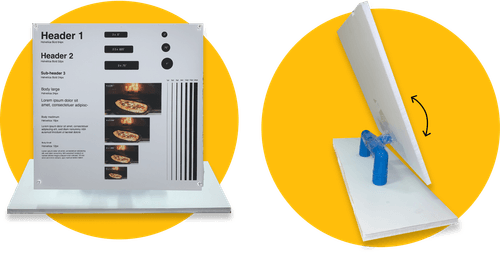
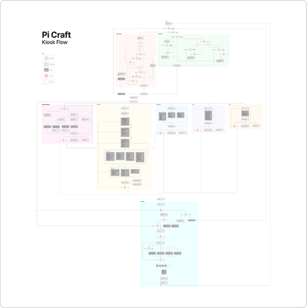
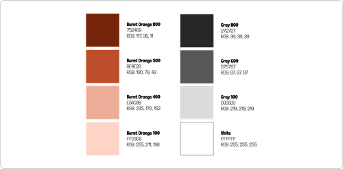
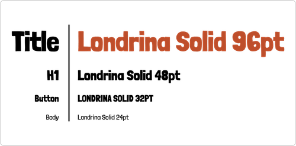
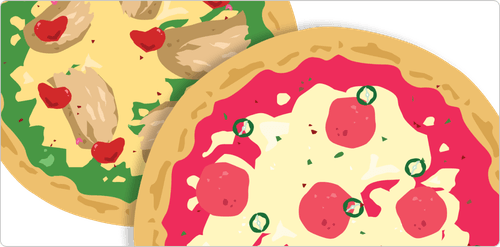
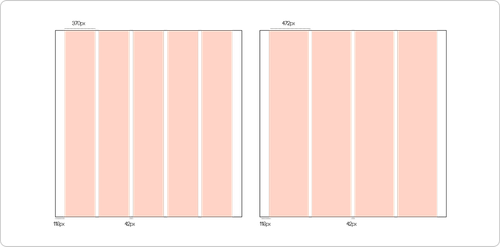
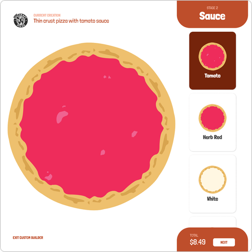

Under One Brand
Unified Johnson & Johnson's fragmented cell therapy platform into one cohesive product, designed and hand-coded end to end.


What if ordering pizza felt like playing a fun, nostalgic video game? This project reinvents the pizza ordering process with an interactive kiosk that lets customers craft their perfect pizza, all while tapping into the playful energy of early 2000s cooking mini-games.
Pi Craft's business model is centered around customizing your own pizza. People walk to the back of the store and see a counter filled with options for dough, sauce, cheese, and toppings. It can be overwhelming to decide what you want with a line of people behind you and no labelling for the product options. This becomes even more challenging with kids in the equation, especially little ones who aren't tall enough to see over the tall counter — a real problem when the target demographic is families and college students.
To address this, I created a custom kiosk experience that simulates the customizable pizza ordering process at the counter, but without the pressure of having people waiting on you to complete your order.


I created a prototype of the physical kiosk to simulate its vertical rotation and validate that the height works for a multitude of potential users. Using this model, I also tested various button and text dimensions to improve readability and interactivity.

After analyzing Pi Craft's business model and their current order experience, I mapped out how a kiosk would fit into their present-day processes with the product options they sell.

After some design exploration, I landed on an aesthetic that would appeal to the plethora of college students and families that eat at Pi Craft: a 2000's cooking video game aesthetic.




With the style nailed down, I built the high-fidelity wireframes for the platform, prioritizing the funky and playful aesthetic throughout.

With the addition of the kiosk, Pi Craft now has alternative ways of ordering and customizing pizzas that are accessible. The kiosk caters to families and college students with its fun 2000's video game aesthetic and clear visualization of the pizzas as users customize them.